Префектура Исикава · Канадзава · гастрономия
Канадзава на каждый день: хлеб, вино, рыба и итальянский ужин из любимых мест керамистки, а ещё кайсэн-дон в старом матия
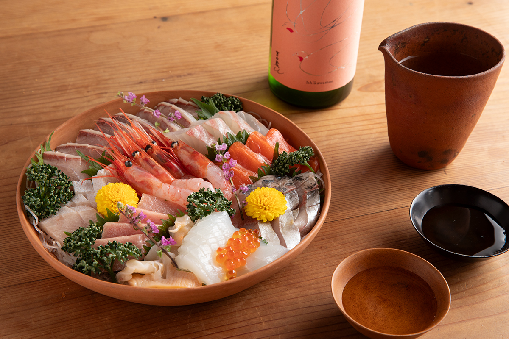
Канадзава славится не только садами и чайными кварталами, но и тем, как здесь едят каждый день. Керамистка, которая переехала в город в 2023 году, показывает свои места: пекарню у дома, винную лавку, рыбную лавку и любимый ресторан.
Знакомство
Город, где есть родник и онсэн
Героиня этой прогулки родом из Токио, она керамистка. В 2008 году она училась гончарному делу в центре керамики Бидзэн и работала у мастера посуды бидзэн-яки, с 2009 года вела в Токио занятия по обжигу без глазури. Потом был переезд в префектуру Нагано, затем пять лет в Вадзиме на полуострове Ното, а с февраля 2023 года она живёт в Канадзаве.
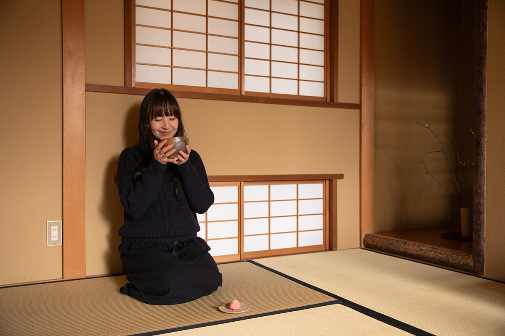
«Когда я выбирала, куда переехать, у меня было два условия: чтобы рядом был родник и онсэн. Канадзава подошла идеально. И в Нагано, и в Вадзиме я постоянно ездила за родниковой водой. От нынешнего дома на машине совсем близко есть тихий родник, там я набираю воду для готовки и для чая. Онсэн тоже рядом, а сам город компактный, почти всюду можно дойти пешком»
керамистка
Её дом одновременно и мастерская. Почти все комнаты здесь японские, на татами, и есть настоящая чайная комната с очагом в полу. Канадзава выросла как замковый город княжества Кага, и чайная культура тут по-прежнему часть жизни. Керамистка тоже пьёт маття каждый день.
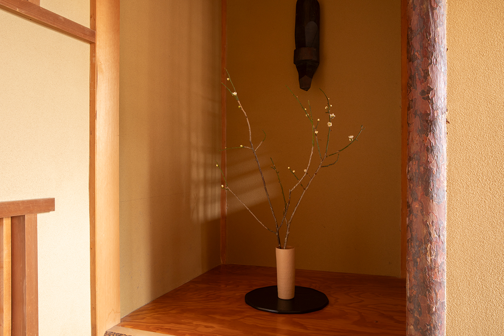
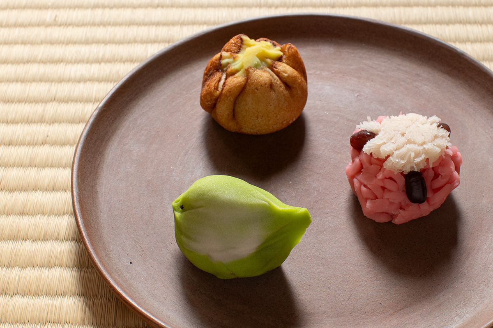
«По правилам чайной церемонии сначала съедают сладость, а потом пьют чай. А я люблю чередовать, как кофе с пирожным. В перерывах пью совсем свободно»
керамистка
Чашку с красивыми разводами от огня она сделала сама, и в руке та лежит удивительно удобно. «Я делаю посуду, которой мне самой хочется пользоваться каждый день», говорит она. Для неё посуда неотделима от ежедневной еды, и места, о которых речь ниже, тоже связаны с ежедневной едой.
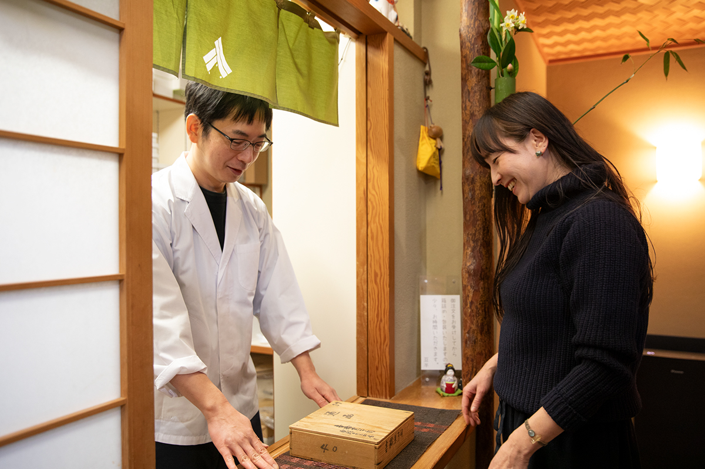
Пекарня
Pistrina EighSky: утро начинается с хлеба
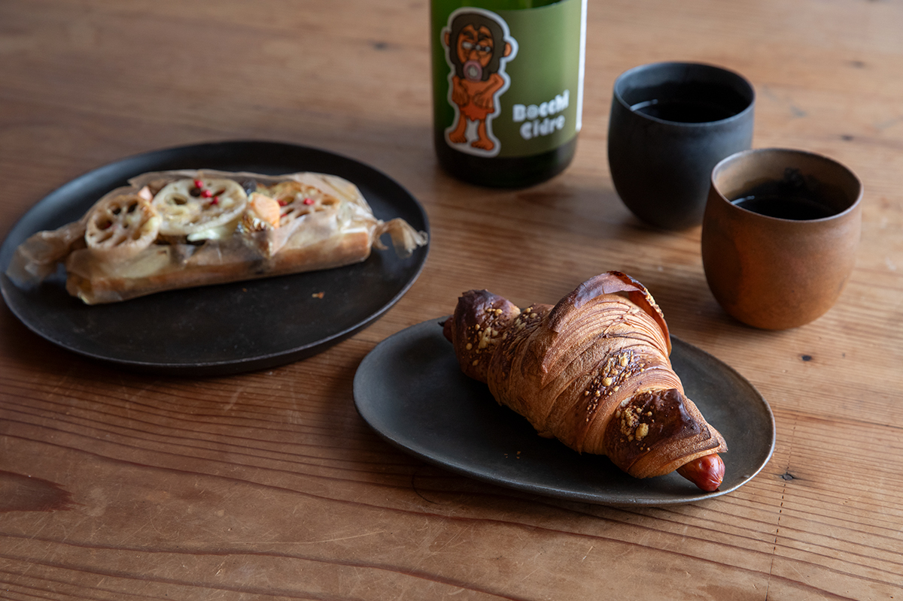
«В Канадзаве много чудесных пекарен, а у нас дома по утрам всегда хлеб, так что мне здесь очень повезло»
керамистка
За хлебом она ходит в Pistrina EighSky, совсем рядом с домом. Владельцы пекарни, муж и жена, оба пекари. Работа не раз переводила их из города в город, и Канадзава понравилась им так, что в 2021 году они открыли здесь своё дело. Тесто в основном замешивает муж, а жена готовит начинки для несладкой выпечки и кремы для сладкой.
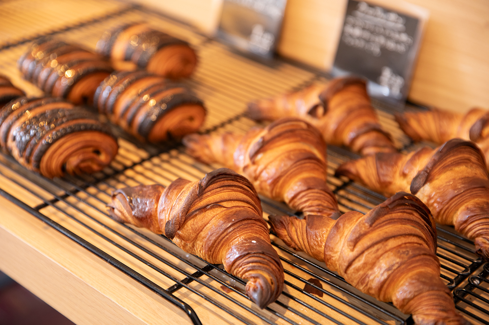
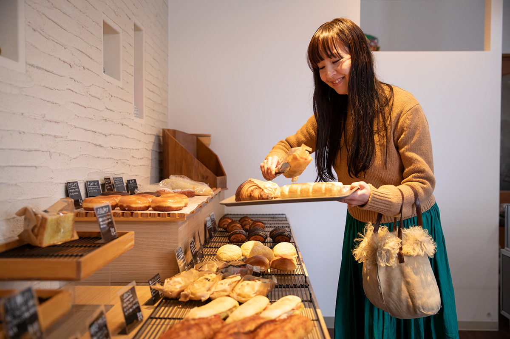
Название звучит загадочно. «Пистрина» по-латыни значит «пекарня», а «Эйски» сложили из двух иероглифов, по одному из имени мужа и жены, прочитав их по-новому. Уже по названию видно, как дружно живут хозяева.
Всего здесь около 60 видов хлеба: от сладких булочек до сэндвичей, что-то хозяева пекут для себя, что-то по просьбам покупателей. Большая часть стоила в 2024 году от 200 до 300 с лишним иен. Хорошо расходится выпечка с продуктами Исикавы, например с солью из Судзу и с жареным чаем кага-ботя. Открывается пекарня в 7 утра.
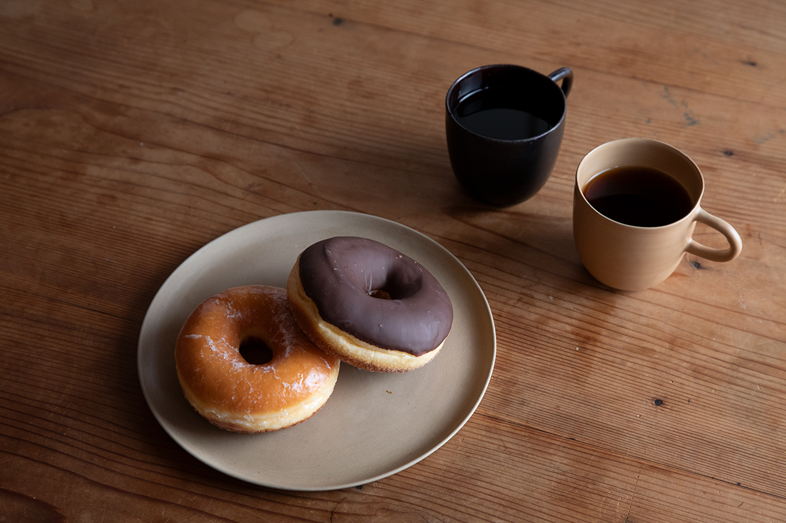
Купив свежего хлеба, она возвращается домой пить кофе. Пончик на её плоской тарелке без глазури выглядит и мягко, и строго. А сухарики, по её словам, здесь такие, что она всегда берёт их про запас.
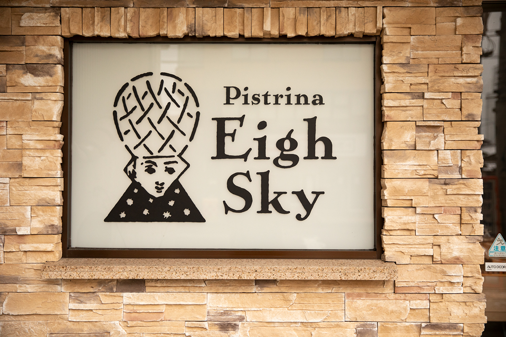
Pistrina EighSky
- Адрес
- префектура Исикава, Канадзава, Исибики, 2-6-1
- Телефон
- +81 76-255-2150
- Часы работы
- 7:00–14:00
- Выходные
- воскресенье, понедельник, праздничные дни
Вино
«Брюккэ»: лавка натурального вина
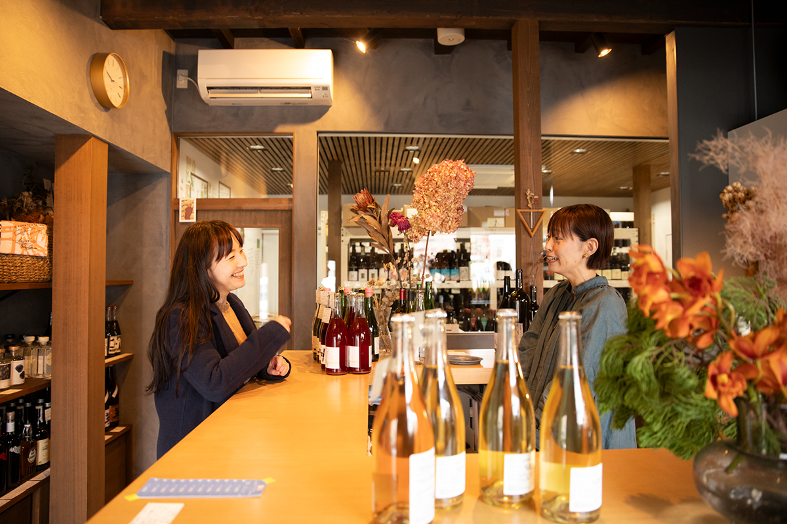
Вино керамистка покупает в лавке «Брюккэ». Хозяйка лавки работает сомелье, и чаще всего бутылку выбирают вместе, просто рассказав ей, что сегодня на ужин: например, мясо. Приятно и то, что хозяйка уже знает её вкус.
Лавку в 2019 году открыла жена хозяина известного в городе японского ресторана. Здесь собрано натуральное вино со всего мира: из Франции, Италии, Германии, Центральной Европы, и хозяйка особенно любит местные, автохтонные сорта винограда. К ценникам приложены подробные записки, и в каждой видна любовь к вину. «Мне приятно, что здесь есть вино из Нагано, где я раньше жила», говорит керамистка.
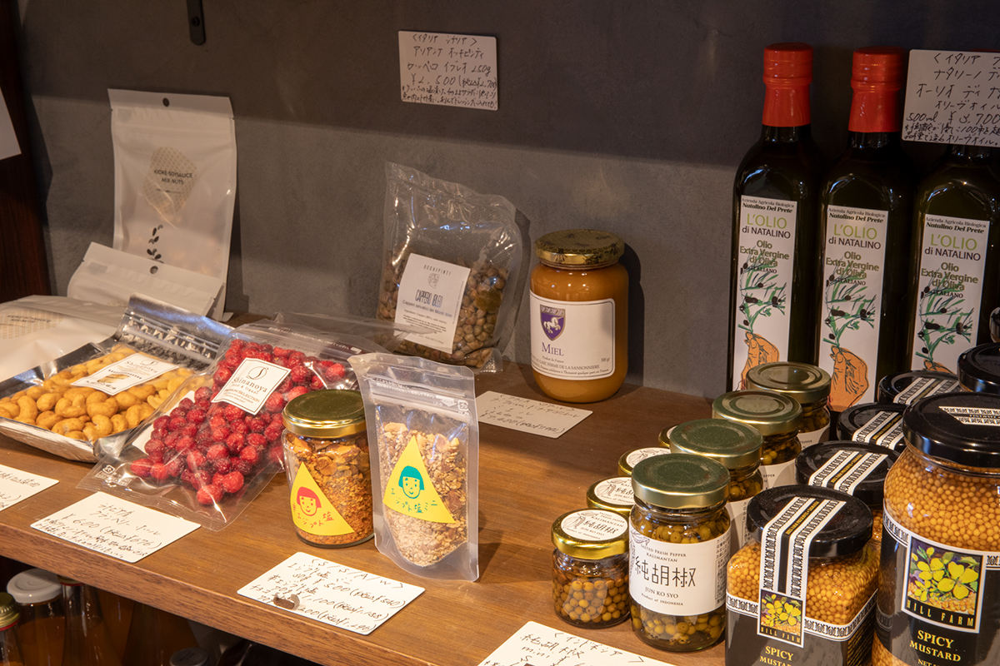
«Брюккэ»
- Адрес
- префектура Исикава, Канадзава, Такаока-мати, 18-2
- Телефон
- +81 76-224-6288
- Часы работы
- 11:00–17:30, в субботу и праздничные дни до 18:00
- Выходные
- воскресенье, понедельник
Рыба
«Китагава»: дары Японского моря на своём блюде
Керамистка любит и готовить, и есть, и выпить, так что Канадзава для неё почти рай. Когда дома собираются друзья, она обязательно идёт в рыбную лавку «Китагава».
«Лавка прямо рядом с домом. Я всегда приношу своё большое блюдо, и мне выкладывают на него сашими, какие посоветуют»
керамистка
Упаковки не остаётся, раскладывать ничего не нужно: очень разумный способ. Вся щедрость моря Хокурику оказывается на её строгом блюде.
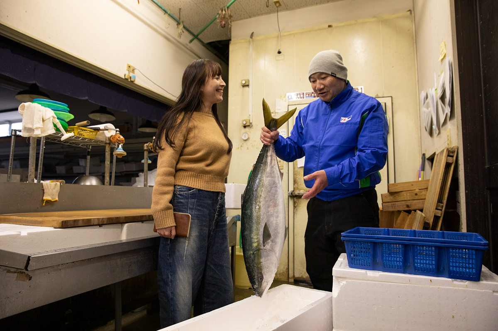
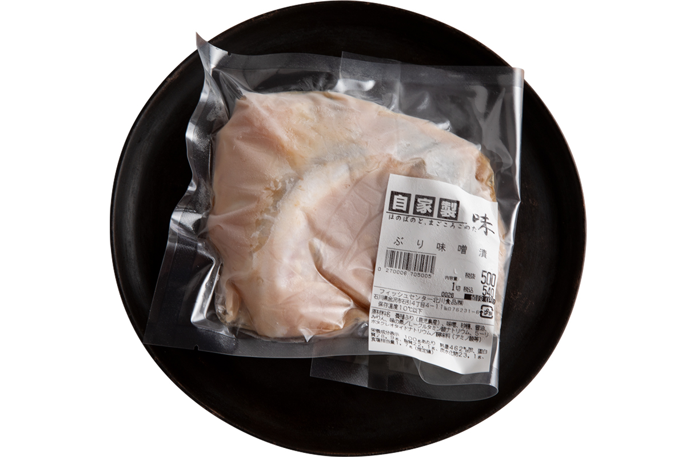
«Китагава» по сути оптовая лавка. Рыбу и морепродукты, выгруженные в порту, здесь покупают прямо на торгах и сразу везут к себе. Рынок посередине не нужен, хозяева сами выбирают товар, поэтому свежесть и качество у лавки отличные. Кроме сашими разделают и на куски, и как угодно ещё. Зимой здесь хороши зимняя бури кан-бури и краб кано-гани, самец снежного краба из Исикавы. Набор готовят по пожеланиям и бюджету, поэтому заказ нужно сделать заранее, а уже потом приходить. «Жду не дождусь крабов!», смеётся керамистка.
Рыбная лавка «Китагава»
- Адрес
- префектура Исикава, Канадзава, Исибики, 4-4-11
- Телефон
- +81 76-231-6793
- Часы работы
- 8:00–15:00
- Выходные
- воскресенье (перед визитом позвоните)
Ужин
«Ува Ува»: итальянская кухня без сценария
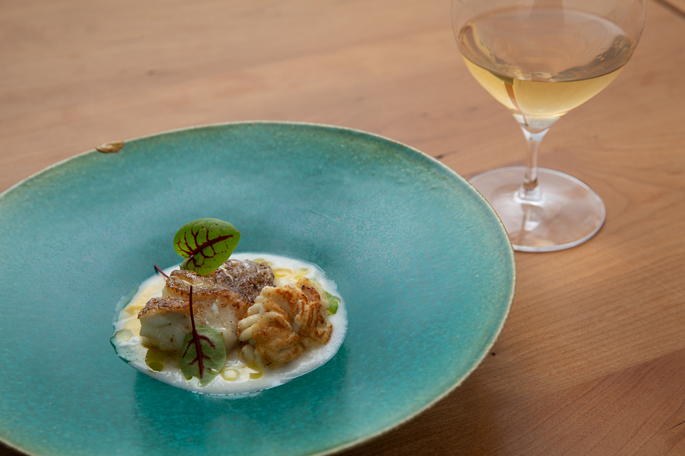
В Канадзаве не кончаются и удовольствия вне дома. Любимый ресторан керамистки «Ува Ува» стоит на улочке Кигура-мати, недалеко от Коримбо, центрального района города. В основе здесь итальянская кухня, но меню полно выдумки: в ход идут дары моря и всё, что дают окрестности.
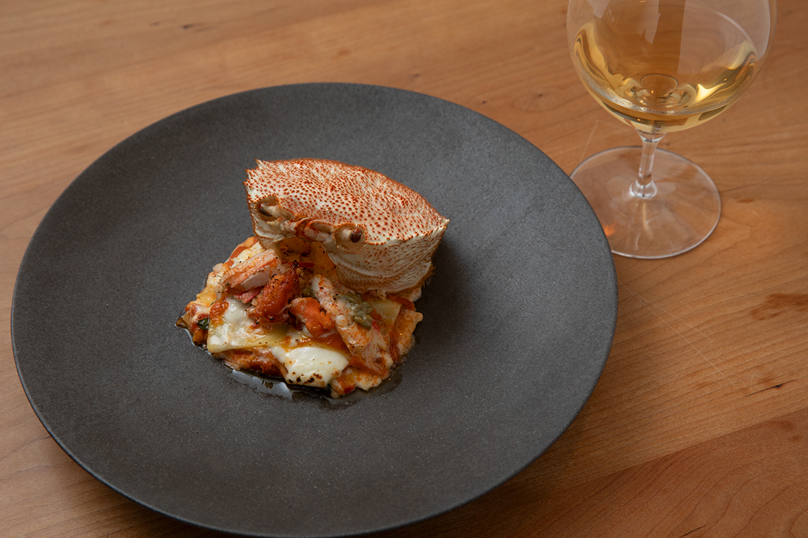
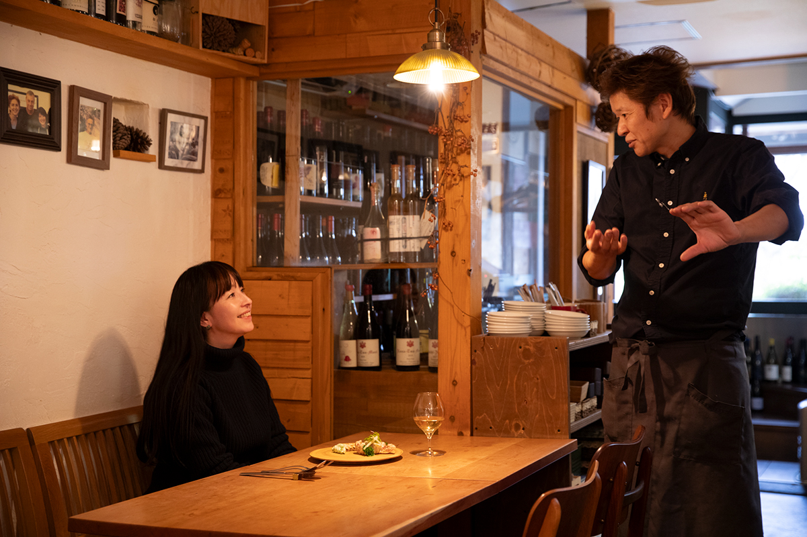
В 2024 году ресторану исполнилось десять лет. Вывеска у него итальянская, но шеф говорит, что больше всего любит довериться продуктам и выражать их свободно. Местную рыбу и овощи он на ходу превращает в запоминающиеся блюда. Стены зала увешаны фотографиями винодельцев, к которым ездили хозяева. «Я большая поклонница хозяйки зала: как бы ни было много гостей, она всегда подробно рассказывает о вине», говорит керамистка.
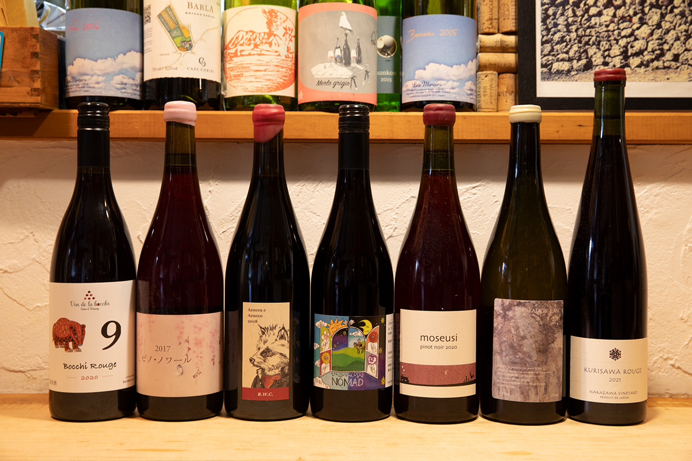
Натуральное вино делает вкус блюд в разы богаче. Стоит попросить посоветовать бутылку, как хозяйка выставляет на стол целый ряд и рассказывает о каждой.
«Это вино делает пожилая пара в Эмилии-Романье, им за семьдесят. В основном они продают его соседям на розлив, но немного уступают и нам, в Японию. А это виноград с высоты 1000 м у подножия Монблана…»
хозяйка зала
Она говорит не о характеристиках вина, а о людях и местах, и их будто видишь перед собой. Керамистка каждый раз ждёт этих рассказов. «У каждого винодельца своя интересная история, и хочется попробовать всё», смеётся она.
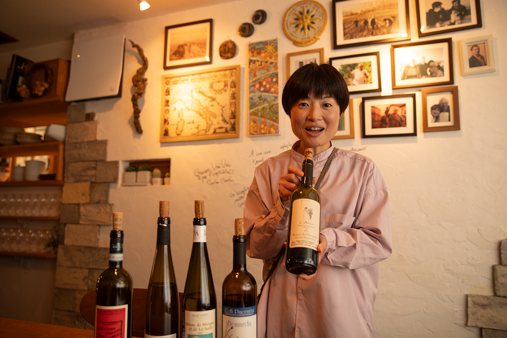
Из таких встреч с едой, выросшей на этой земле, и с людьми, которые за ней стоят, и складывается жизнь керамистки в Канадзаве.
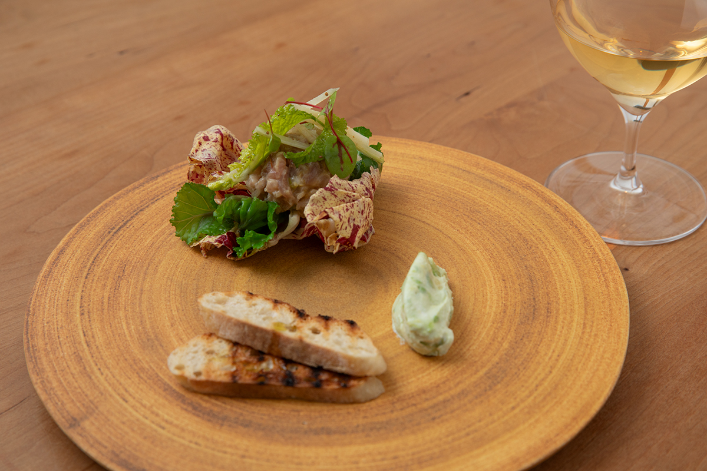
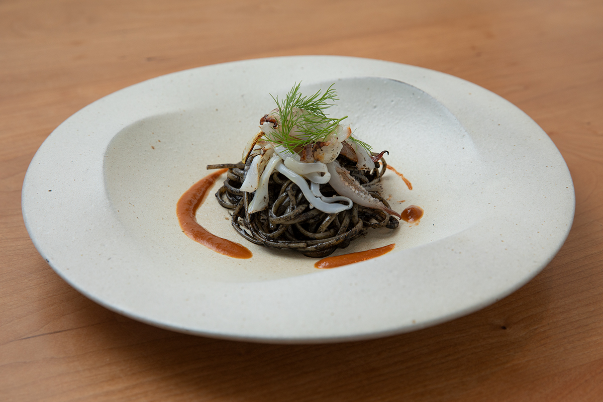
«Ува Ува»
- Адрес
- префектура Исикава, Канадзава, Кигура-мати, 5-4
- Телефон
- +81 76-254-5992
- Часы работы
- 18:00–23:00 (последний заказ в 22:00)
- Выходные
- среда
- Цены / Вход
- сезонный сет на выбор шефа (три закуски, основное блюдо, паста, хлеб) около 5700 иен, есть и блюда по меню
У вокзала
TILE: кайсэн-дон в доме, которому 110 лет
У вокзала Канадзава, в квартале Конохана-мати, 28 марта 2021 года открылся ресторан TILE. Он занимает перестроенный матия, городской дом, которому 110 лет.
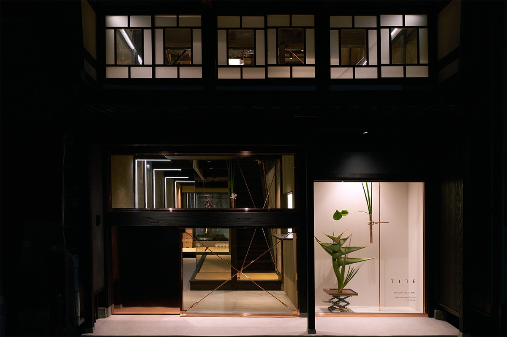
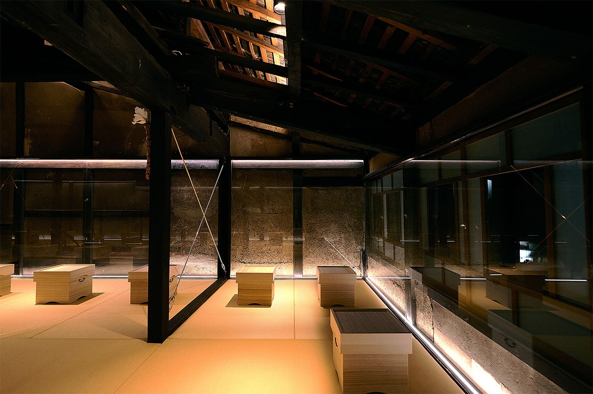
Ресторан стоит на трёх идеях. Первая: сам город, Канадзава с историей, которая тянется с эпохи Эдо, и старым настроением. Приметой дома служит низкий вход нидзиригути, как в чайном домике. Вторая: «переосмысление традиции», на этой мысли здесь заново придуман сам способ есть. Третья: закрытое, особое пространство.
Начиналось всё с ресторана COIL, который та же компания открыла в 2018 году недалеко от рынка Оми-тё. Там гости сами сворачивают тонкие роллы хосомаки, давний местный фастфуд. TILE продолжает идею еды, которую доводишь до конца своими руками, и добавляет к ней «переосмысление традиции». Ресторан не рассчитан на толпу, а костюмы персонала, придуманные в 2021 году во время пандемии, тоже стали частью облика.
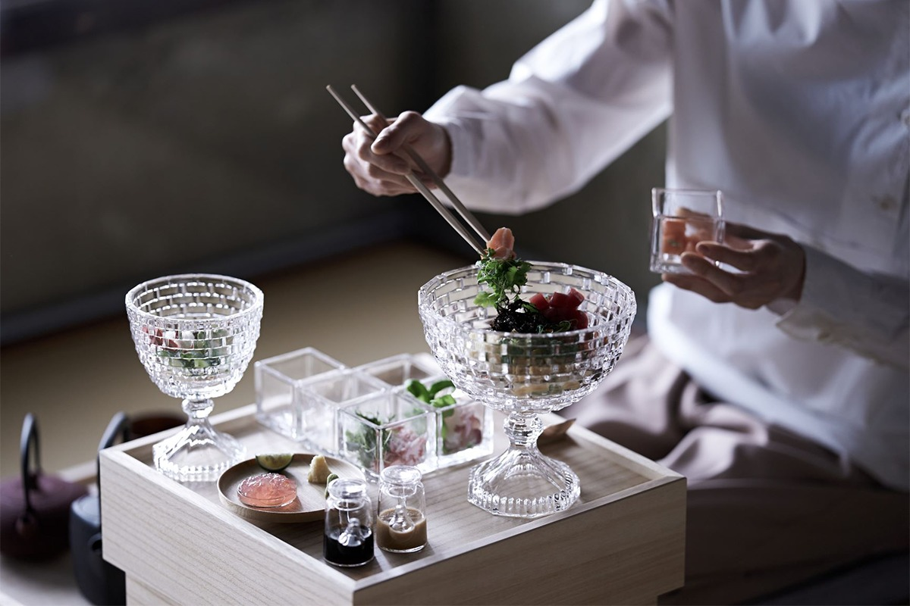
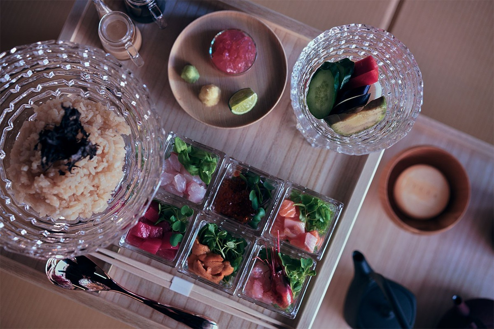
Главное блюдо это «канадзавский кайсэн-дон с приправами», чаша риса с морепродуктами, которую собирают сами, как шкатулку с драгоценностями. Рис на выбор: обычный белый или «красный», смешанный с красным уксусом. Начинок около 30: свежая рыба и морепродукты, рыба, выдержанная в водорослях комбу, ростбиф и другое. В 2021 году сет из кайсэн-дона, супа и ассорти солений нукадзукэ стоил 2750 иен с пятью начинками, 3080 иен с шестью и 3740 иен с восемью.
Суп к сету подают в вафельной оболочке монака, и вкус выбирают сами. Прозрачный бульон: тофу, комбу, морской лещ тай, креветка или пенка юба. Мисо-суп: моллюски сидзими, грибы намэко, водоросли аоса, тай или креветка. Есть и напитки, включая алкоголь, десерты и блюда только на вынос.
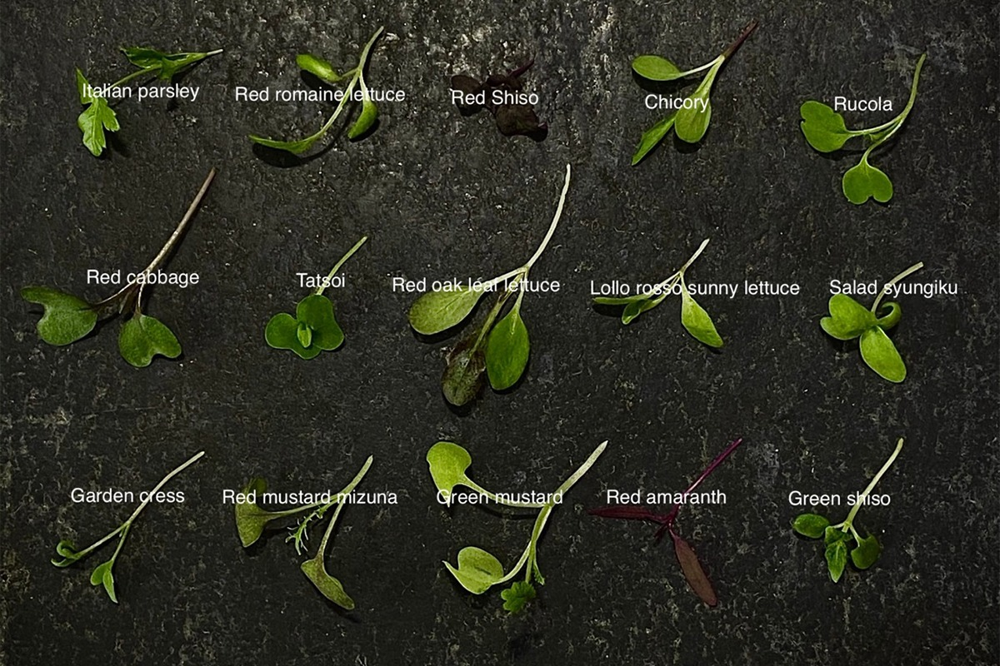
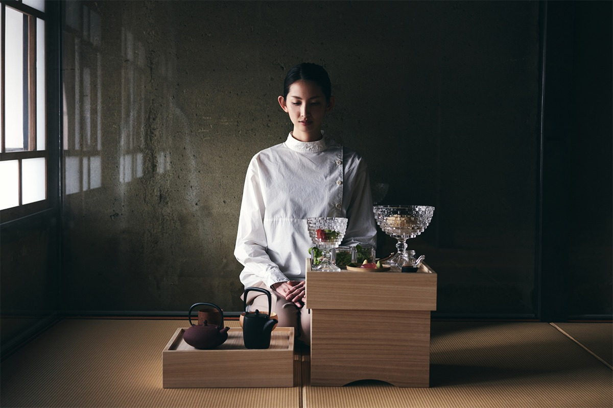
Глиняные стены сохранились с тех времён, когда дом построили. Стульев и столов здесь нет совсем: образцом стали хакодзэн, личные ящики-подносы, за которыми ели в японских домах прежде. К чёрным столбам, балкам и глиняным стенам добавили стекло и металл, и «переосмысление традиции» видно не только в еде, но и в самом пространстве.
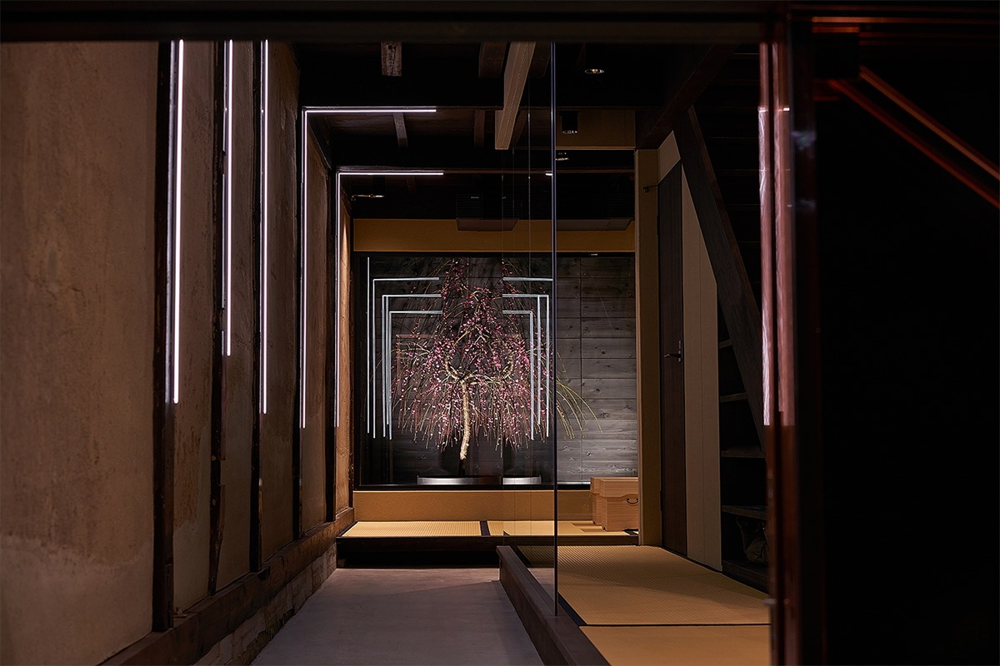
TILE
- Адрес
- префектура Исикава, Канадзава, Конохана-мати, 4-18
- Телефон
- +81 76-255-2802
- Часы работы
- 11:00–22:00
- Выходные
- нерегулярно
- Сайт
- tile-japan.jp
Фото: Ёсихито Одзава.